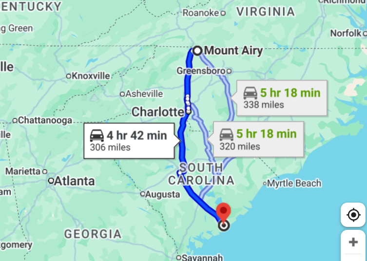

Lec 02: Inference In Simple Linear Regression
1 Overview
1.1 Review
- History of regression
- Simple linear regression model
- Least squares estimate
- Estimate coefficients and variance
- Coefficient of determination
- Interpretation of coefficients
1.2 Outline
- Introduction to Inference in SLR
- Hypothesis testing for regression coefficients
- Confidence intervals for regression coefficients
- Estimation and confidence intervals for mean response
- Prediction and Prediction intervals for new observations
- ANOVA for SLR
2 Intro
2.1 What is Statistical Inference
- Broadly speaking, statistical inference is the process of drawing conclusions about a population based on a sample of data from that population.
- There are different types of statistical inference, including:
- Estimation: Estimating population parameters (e.g., mean, variance) based on sample statistics.
- Hypothesis Testing: Testing assumptions or claims about population parameters using sample data.
- Prediction: Making predictions about future observations based on a fitted model.
- So far, we have learned how to estimate \(\beta_0, \beta_1\) and \(\sigma^2\) in SLR. Next, we will learn how to do inference in SLR.
2.2 Inference Problems in SLR
Hypothesis testing for regression coefficients. Example, \(H_0: \beta_1=0\) vs \(H_a: \beta_1\neq 0\).
Confidence intervals for regression coefficients. Example, a 95% CI for \(\beta_1\).
Prediction () and confidence intervals for mean response. Example, estimation and a 95% CI for \(E(y|x=x^*)\).
Prediction intervals for new observations. Example, a 95% PI for a new observation \(y_{new}\) at \(x=x^*\).
ANOVA for SLR. Example, test if the regression model is useful.
2.3 How did we do inference for one-sample problems?
To understand inference in SLR, let’s first review how we did inference for one-sample problems.
A random sample \(y_1, y_2, \cdots, y_n \overset{iid}\sim N(\mu, \sigma^2)\).
The parameter of interest: \(\mu\) (unknown).
Point estimate of \(\mu\). \(\bar{y}=\frac{1}{n}\sum_{i=1}^n y_i\) to estimate the population mean \(\mu\).
Sampling distribution of \(\bar{y}\): \(\bar{y} \sim N(\mu, \frac{\sigma^2}{n})\).
But \(\sigma^2\) is unknown. We estimate it by \(s^2=\frac{1}{n-1}\sum_{i=1}^n (y_i-\bar{y})^2\).
Standard error (SE) of \(\bar{y}\): \(SE(\bar{y}) = \frac{s}{\sqrt{n}}\).
2.4 Inference: hypothesis testing
Hypothesis test: \(H_0: \mu=\mu_0\) vs \(H_a: \mu\neq \mu_0\).
Test statistic: \[t=\frac{\bar{y}-\mu_0}{SE(\bar{y})}=\frac{\bar{y}-\mu_0}{s/\sqrt{n}} \overset{H_0}\sim t_{n-1}\]
Not normal? \(y_1, y_2, \cdots, y_n \overset{iid}\sim (\mu, \sigma^2)\). The results can still be used when \(n\) is large enough. Why?
2.5 Inference Confidence Interval
A 100(1-\(\alpha\))% confidence interval for \(\mu\) is given by: \[\bar{y} \pm t_{\alpha/2, n-1} \times SE(\bar{y}) = \bar{y} \pm t_{\alpha/2, n-1} \frac{s}{\sqrt{n}}\]
The standard error (SE) quantifies the precision of the estimate. The smaller the SE, the more precise the estimate.
The critical value \(t_{\alpha/2, n-1}\) determines the width of the confidence interval. A larger critical value (smaller \(\alpha\)) results in a wider interval.
3 Inference in SLR
3.1 Outline
Model: \(y_i = \beta_0 + \beta_1 x_i + \epsilon_i, \quad i=1, \cdots, n\) where \(\epsilon_i \overset{iid}\sim N(0, \sigma^2)\).
We will derive the following results
\(E[\hat\beta_0]= \beta_0\), \(E[\hat\beta_1]=\beta_1\). The LSE is unbiased.
\(Var(\hat\beta_0)=\sigma^2[\frac{1}{n} + \frac{\bar{x}^2}{S_{xx}}]\), \(Var(\hat\beta_1)=\frac{\sigma^2}{S_{xx}}\).
Sampling distributions of \(\hat\beta_0, \hat\beta_1\).
3.2 Review: Properties of Expectation and Variance
A random variable \(X\sim (\mu, \sigma^2)\), i.e., \(E(X)=\mu, Var(X)=E[(X-\mu)^2]=\sigma^2\)
- \(E(aX+b)=aE(X)+b=a\mu+b\)
- \(Var(aX+b)=a^2 Var(X)=a^2 \sigma^2\)
For random variables \(X_1, X_2\),
- \(E(X_1+X_2)=E(X_1)+E(X_2)\)
- If \(X_1, X_2\) are independent, then \(Var(X_1+X_2)=Var(X_1)+Var(X_2)\).
3.3 Expectation of \(\hat\beta_1\)
Recall that \[\begin{eqnarray*} \hat{\beta_1} &=& \frac{S_{xy}}{S_{xx}} = \frac{\sum_{i=1}^n (x_i - \bar{x})(y_i - \bar{y})}{S_{xx}}\\ &=&\frac{\sum_{i=1}^n (x_i - \bar{x})y_i}{S_{xx}} - \frac{\bar y \sum_{i=1}^n (x_i - \bar{x})}{S_{xx}} \end{eqnarray*}\]
Since \(\sum_{i=1}^n (x_i - \bar{x})=0\), we have \[\hat\beta_1 =\frac{\sum_{i=1}^n (x_i - \bar{x})y_i}{\sum_{i=1}^n (x_i - \bar{x})^2}\]
3.4 Expectation of \(\hat\beta_1\)
- Since \(y_i = \beta_0 + \beta_1 x_i + \epsilon_i\) and \(E[\epsilon_i]=0\), we have
\[ \begin{aligned} E(\hat{\beta}_1) &= E\!\left[ \frac{\sum_{i=1}^n (x_i-\bar{x})y_i}{S_{xx}} \right] \\[6pt] &= \frac{1}{S_{xx}} \sum_{i=1}^n (x_i-\bar{x})E(y_i) \\[6pt] &= \frac{1}{S_{xx}} \sum_{i=1}^n (x_i-\bar{x})(\beta_0+\beta_1x_i) \\[6pt] &= \frac{\beta_1}{S_{xx}} \sum_{i=1}^n (x_i-\bar{x})x_i \\[6pt] &= \beta_1. \end{aligned} \]
3.5 Variance of \(\hat\beta_1\)
- Recall that \(Var(y_i)=Var(\epsilon_i)=\sigma^2\) and \(y_i's\) are uncorrelated (a stronger assumption is independence)
\[ \begin{aligned} \operatorname{Var}(\hat{\beta}_1) &= \operatorname{Var}\!\left[ \frac{\sum_{i=1}^n (x_i-\bar{x})y_i}{S_{xx}} \right] \\[6pt] &= \frac{1}{S_{xx}^2}\, \operatorname{Var}\!\left[ \sum_{i=1}^n (x_i-\bar{x})y_i \right] \\[6pt] &= \frac{1}{S_{xx}^2} \sum_{i=1}^n (x_i-\bar{x})^2\, \operatorname{Var}(y_i) \\[6pt] &= \frac{\sigma^2}{S_{xx}^2} \sum_{i=1}^n (x_i-\bar{x})^2 \\[6pt] &= \frac{\sigma^2}{S_{xx}}. \end{aligned} \]
4 Distribution
4.1 Distribution of \(\hat\beta_1\) when \(\sigma^2\) is known
Since \(\hat\beta_1\) is a linear combination of \(y_i's\) and \(y_i's\) are normally distributed, \(\hat\beta_1\) is also normally distributed.
Thus, when \(\sigma^2\) is known, we have \[\hat\beta_1 \sim N(\beta_1, \frac{\sigma^2}{S_{xx}})\]
The standardized version: \[Z=\frac{\hat\beta_1 - \beta_1}{\sqrt{Var(\hat\beta_1)}} = \frac{\hat\beta_1 - \beta_1}{\sqrt{\sigma^2/S_{xx}}}=\frac{\hat\beta_1 - \beta_1}{\sigma/\sqrt{S_{xx}}} \sim N(0, 1)\]
4.2 CI for \(\beta_1\) when \(\sigma^2\) is known
- Because \(\frac{\hat\beta_1 - \beta_1}{\sigma/\sqrt{S_{xx}}} \sim N(0, 1)\), we have
\[P\left(-z_{1-\alpha/2} \leq \frac{\hat\beta_1 - \beta_1}{\sigma/\sqrt{S_{xx}}} \leq z_{1-\alpha/2}\right) = 1-\alpha\] Therefore, a 100(1-\(\alpha\))% confidence interval for \(\beta_1\) is given by: \[(\hat\beta_1 - z_{1-\alpha/2} \frac{\sigma}{\sqrt{S_{xx}}}, \hat\beta_1 + z_{1-\alpha/2} \frac{\sigma}{\sqrt{S_{xx}}})\] Note \(-z_{1-\alpha/2} = z_{\alpha/2}\).
4.3 Distribution of \(\hat\beta_1\) when \(\sigma^2\) is unknown
When \(\sigma^2\) is unknown, we estimate it by \(s^2=\frac{SSE}{n-2}\).
We define \(\hat{Var}(\hat{\beta_1})=\frac{s^2}{S_{xx}}\) and the estimated standard error \(SE(\hat\beta_1)=\sqrt{\hat{Var}(\hat{\beta_1})}=\frac{s}{\sqrt{S_{xx}}}\).
The standardized version: \[\frac{\hat\beta_1 - \beta_1}{SE(\hat\beta_1)} = \frac{\hat\beta_1 - \beta_1}{s/\sqrt{S_{xx}}} \]
4.4 How to construct a t-distributed statistic?
- Let \(Z\) be a standard normal random variable
- Let \(U\) be a chi-square random variable with \(v\) degrees of freedom
- Suppose \(Z\) and \(U\) are independent
- Then the random variable \[T=\frac{Z}{\sqrt{U/v}}\] has a t-distribution with \(v\) degrees of freedom, i.e., \(T\sim t_v\).
4.5 Details about the t-statistic in SLR
The assumptions of the SLR model: 1. \(y_i = \beta_0 + \beta_1 x_i + \epsilon_i, \quad \text{where } \epsilon_1, \cdots, \epsilon_n \overset{iid}\sim N(0, \sigma^2)\)
Under the assumptions, we can show
\(\hat\beta_1 \sim N(\beta_1, \frac{\sigma^2}{S_{xx}})\), which implies that \[Z=\frac{\hat\beta_1 - \beta_1}{\sigma/\sqrt{S_{xx}}} \sim N(0, 1)\]
\(\hat\beta_1\) and \(s^2\) are independent, which implies that \(Z\) and \(s^2\) are independent.
\(\frac{(n-2)s^2}{\sigma^2}=\frac{SSE}{\sigma^2} \sim \chi^2_{n-2}\).
4.6 Details about the t-statistic in SLR
- By the way to construct a t-distributed statistic, we have \[T=\frac{Z}{\sqrt{U/(n-2)}}\sim t_{n-2}\] where \(Z=\frac{\hat\beta_1 - \beta_1}{\sigma/\sqrt{S_{xx}}}\) and \(U=\frac{(n-2)s^2}{\sigma^2}\).
Thus, we have \[T=\frac{\hat\beta_1 - \beta_1}{s/\sqrt{S_{xx}}} =\frac{\hat\beta_1 - \beta_1}{SE(\hat\beta_1)} \sim t_{n-2}\]
- Note that we have \(n-2\) degrees of freedom because we estimated two parameters \(\beta_0\) and \(\beta_1\) in SLR.
5 CI
5.1 CI for \(\beta_1\) when \(\sigma^2\) is unknown
- Because \(\frac{\hat\beta_1 - \beta_1}{SE(\hat\beta_1)} \sim t_{n-2}\), we have
\[P\left(-t_{n-2, 1-\alpha/2} \leq \frac{\hat\beta_1 - \beta_1}{SE(\hat\beta_1)} \leq t_{n-2, 1-\alpha/2}\right) = 1-\alpha\]
- Therefore, a 100(1-\(\alpha\))% confidence interval for \(\beta_1\) is given by: \[(\hat\beta_1 - t_{n-2, 1-\alpha/2} SE(\hat\beta_1), \hat\beta_1 + t_{n-2, 1-\alpha/2} SE(\hat\beta_1))\] where \(SE(\hat\beta_1)=\frac{s}{\sqrt{S_{xx}}}\).
5.2 Example: Mount Airy and Charleston
Summer temperature averages in Mount Airy, NC and Charleston, SC (1937-2021)
5.3 Example: Mount Airy and Charleston
5.4 Example: Mount Airy and Charleston

5.5 Example: The fitting regression model
The fitted regression model is \[\hat{y} = 17.6 + 0.39 x.\]
Interpretation of coefficients:
- \(\hat\beta_0 = 17.6\): When MtAiry is 0, the expected value of Charl is 17.6. Warning: this interpretation is not meaningful because MtAiry=0 is outside the range of the data.
- \(\hat\beta_1 = 0.39\): For a one unit increase in MtAiry, the expected change in Charl is an increase of approximately 0.39 units.
5.6 Example: Mount Airy and Charleston
Call:
lm(formula = Charl ~ MtAiry, data = mtair)
Residuals:
Min 1Q Median 3Q Max
-1.7502 -0.6291 -0.0123 0.5585 1.9484
Coefficients:
Estimate Std. Error t value Pr(>|t|)
(Intercept) 17.6208 2.8325 6.221 1.91e-08 ***
MtAiry 0.3921 0.1209 3.244 0.0017 **
---
Signif. codes: 0 '***' 0.001 '**' 0.01 '*' 0.05 '.' 0.1 ' ' 1
Residual standard error: 0.7581 on 83 degrees of freedom
Multiple R-squared: 0.1125, Adjusted R-squared: 0.1018
F-statistic: 10.52 on 1 and 83 DF, p-value: 0.0017015.7 Example: Mount Airy and Charleston
To obtain a 95% CI for \(\beta_1\), we need the following values from the R output
\(\hat\beta_1 \approx 0.39\)
\(se(\hat\beta) \approx 0.1209\)
\(n-2=83\) (degrees of freedom) and \(t_{83, 0.975} \approx 1.99\).
Therefore, a 95% CI for \(\beta_1\) is given by: \[(0.39 - 1.99 \times 0.1209, 0.39 + 1.99 \times 0.1209) = (0.15, 0.63)\]
5.8 Example: Mount Airy and Charleston
We can also use the R function confint() to obtain the confidence intervals for regression coefficients.
2.5 % 97.5 %
(Intercept) 11.9870442 23.2545143
MtAiry 0.1516618 0.6325081 2.5 % 97.5 %
MtAiry 0.1516618 0.6325081Therefore: \(\hat\beta_1 \approx 0.39\) and a 95% CI for \(\beta_1\) is (0.15, 0.63).
Interpretation of the 95% CI for \(\beta_1\): With 95% confidence, the estimated average summer temp in Charleston increases between 0.15 and 0.63 degrees Celsius per degree Celsius increment in average summer temp in Mount Airy.
6 Hypothesis Testing
6.1 Hypothesis Testing in SLR
We will focus on hypothesis testing for \(\beta_1\).
In SLR, we are often interested in testing whether there is a linear relationship between \(x\) and \(y\).
The null hypothesis is that there is no linear relationship, i.e., \(\beta_1=0\).
The alternative hypothesis is that there is a linear relationship, i.e., \(\beta_1 \neq 0\).
Thus, we want to test the following hypotheses: \[H_0: \beta_1=0 \quad \text{vs} \quad H_a: \beta_1 \neq 0\]
6.2 Hypothesis testing in general: Five steps
- Step 1: State the null and alternative hypotheses.
- Step 2: Choose a significance level \(\alpha\).
- Step 3: Calculate a test statistic using the sample.
- Step 4: Determine the rejection region or p-value.
- Step 5: Make a decision and interpret the results.
6.3 Test Statistic for \(\beta_1\)
The test statistic is given by: \[T=\frac{\hat\beta_1 - 0}{SE(\hat\beta_1)} = \frac{\hat\beta_1}{s/\sqrt{S_{xx}}}\]
When \(H_0\) is true, i.e., \(\beta_1=0\), \(T \sim t_{n-2}\).
6.4 Rejection/critical Region and p-value
Rejection region approach: Reject \(H_0\) if \(|T| > t_{n-2, 1-\alpha/2}\).
p-value approach: The p-value (two-sided) is given by \[p-value = 2P(T \geq |t_{obs}|)\] where \(t_{obs}\) is the observed value of the test statistic \(T\). What is the distribution of \(T\)?
- If \(p-value < \alpha\), we reject \(H_0\).
- If \(p-value \geq \alpha\), we fail to reject \(H_0\). (there is not enough evidence to reject \(H_0\)).
6.5 Rejection/critical Region and p-value
6.6 Example: Mount Airy and Charleston
- Recall that \(\hat\beta_1= 0.39\) and \(SE(\hat\beta_1)=0.1209\).
- The t-statistic is \(T=\frac{0.3921-0}{0.1209} \approx 3.24\).
- The degrees of freedom is \(n-2=83\).
- The critical value \(t_{83, 0.975} \approx 1.99\). In R, use ``qt(0.975, 83)’’. We reject the null hypothesis because \(|3.24| > 1.99\).
- The p-value is given by \(2P(T \geq 3.24) \approx 0.0017\) (using R). We reject the null hypothesis because \(0.0017 < 0.05\).
- We conclude that there is a significant linear relationship between the average summer temperatures in Mount Airy and Charleston.
6.7 Example: Mount Airy and Charleston
Call:
lm(formula = Charl ~ MtAiry, data = mtair)
Residuals:
Min 1Q Median 3Q Max
-1.7502 -0.6291 -0.0123 0.5585 1.9484
Coefficients:
Estimate Std. Error t value Pr(>|t|)
(Intercept) 17.6208 2.8325 6.221 1.91e-08 ***
MtAiry 0.3921 0.1209 3.244 0.0017 **
---
Signif. codes: 0 '***' 0.001 '**' 0.01 '*' 0.05 '.' 0.1 ' ' 1
Residual standard error: 0.7581 on 83 degrees of freedom
Multiple R-squared: 0.1125, Adjusted R-squared: 0.1018
F-statistic: 10.52 on 1 and 83 DF, p-value: 0.0017016.8 One-sided tests: \(H_1: \beta_1 > 0\)
We can also perform one-sided tests. For example, to test \[H_0: \beta_1 \leq 0 \quad \text{vs} \quad H_a: \beta_1 > 0\]
Rejection region approach: Reject \(H_0\) if \(T > t_{n-2, 1-\alpha}\).
p-value approach: The p-value (right-sided) is given by \[p-value = P(T \geq t_{obs})\] We reject \(H_0\) if \(p-value < \alpha\).
6.9 One-sided tests: \(H_1: \beta_1 > 0\)
In some applications, we may be interested in testing one-sided alternatives. For example, we would like to know whether Mount Airy has a positive linear relationship with Charleston, i.e.,
\[H_0: \beta_1 \geq 0 \quad \text{vs} \quad H_a: \beta_1 < 0\]
Rejection region approach: Reject \(H_0\) if \(T < -t_{n-2, 1-\alpha}\).
p-value approach: The p-value (left-sided) is given by \[p-value = P(T \leq t_{obs})\]
6.10 Example: Mount Airy and Charleston
- For the Mount Airy and Charleston example, we have \(t_{obs} = 3.24\) and \(n-2=83\).
- The critical value \(t_{83, 0.95} \approx 1.66\). We reject the null hypothesis because \(3.24 > 1.66\).
- The p-value is given by \(P(T \geq 3.24) \approx 0.00085\) (using R). We reject the null hypothesis because \(0.00085 < 0.05\).